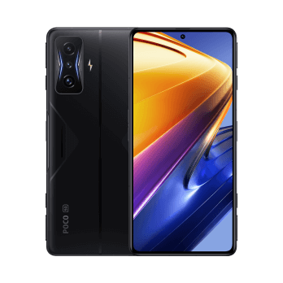

Celulares
Apple
Si hablamos de las mejores marcas de celulares no podemos dejar pasar a Apple. Esta firma
estadounidense cuenta con millones de fans no solo por sus móviles, sino por el resto de productos
que ofrece como tablets, computadoras y más.
Aunque Steve Jobs (fundador de Apple) y Steve
Wozniak
(cofundador) venían trabajando en proyectos tecnológicos desde los años setenta, fue recién en 2007
que se aventuraron a lanzar su primer IPhone, convirtiéndose desde ese momento en una de las mejores
marcas de celulares.
Iphone 14 pro-max

caracteristicas
- Frente de Ceramic Shield.
- Diseño de acero inoxidable con parte posterior de vidrio mate texturizado.
- capacidad de 128 gb a 1tb
- Chip A16 Bionic
Iphone 14-plus
caracteristicas
- Pantalla Super Retina XDR
- Chip A15 Bionic
- Cámara TrueDepth
- Pantalla OLED de 6,1 y 6,7 pulgadas
Iphone SE 3generacion
caracteristicas
- Un chip muy muy veloz
- Un gran avance en duración de batería
- Un diseño hecho para durar
- Una cámara que es una superestrella
Samsung
Esta compañía, fundada en Corea del Sur en 1938, ha sabido ganarse al público gracias a que, año tras
año, implementa en sus equipos lo último en tecnología e innovación.
Y es que, justamente, fue
esta
firma coreana una de las primeras en lanzar teléfonos inteligentes de calidad que permitían un
sinfín de posibilidades. Por ejemplo, el Samsung Galaxy S2, lanzado en mayo de 2011, fue uno de los
grandes teléfonos de la historia de la marca y cuyo sistema operativo ya funcionaba con Android, el
cual permitía muchas opciones con conexión a Internet.
Galaxy Z

caracteristicas
- Poderoso. Productivo
- Pantalla grande y envolvente
- Nuestro plegable más resistente hasta el momento
- Cámara nocturna
Galaxy S
caracteristicas
- Cámara Principal - Resolución (Múltiple) 108.0 MP + 10.0 MP +12.0 MP + 10.0 MP
- (GB)Tamaño RAM 12
- Pantalla 173.1mm (6.8" rectángulo completo) / 172.5mm (6.8" esquinas redondeadas)
- Dynamic AMOLED 2X
Galaxy Note
caracteristicas
- El procesador actualizado proporciona un mejor rendimiento.
- Baja latencia para brindar una experiencia de lápiz completamente realista.
- Cámara de nivel profesional
Galaxy Galaxy A

caracteristicas
- Pantalla de 6,6 pulgadas
- Sistema de cámara cuádruple
- 5,000mAh Battery
- Resistencia al agua y al polvo
Xiaomi
Esta es una firma que se ha puesto muy de moda en los últimos años, lo que la ha llevado a convertirse en la cuarta más vendida del mundo. Gracias a su gran calidad, pero, sobre todo, a sus accesibles precios, se posiciona como una de las favoritas dándole batalla a la gran compañía china Huawei.
12 T Pro

caracteristicas
- Snapdragon® 8+ Gen 1
- 8 GB+256 GB | 12 GB+256 GB
- DotDisplay AMOLED de 6,67"
- Cámara triple de 200 MP + 8 MP + 2 MP
Redmi Note 11 pro

caracteristicas
- HyperCharge de 120 W
- Cámara principal de nivel profesional de 108 MP
- Pantalla DotDisplay AMOLED FHD+ de 120 Hz
- Dos altavoces, SONIDO DE JBL
Poco F4 GT
caracteristicas
- Todopoderoso Snapdragon® 8 Gen 1
- Smart 120W HyperCharge
- Pantalla plana AMOLED de 120 Hz
- 4700 mAh